전자계산기조직응용기사 (2010-07-25 기출문제)
1과목: 전자계산기 프로그래밍
1. Base register와 관련된 어셈블리 명령어는?
- START, END
- OPEN, CLOSE
- USING, DROP
- ENTRY, EXTERN
(정답률: 68%)

2. C 언어에서 표준 입력인 키보드로부터 문자열을 지정된 양식에 따라 읽어 변수 값을 문자열로 변환시켜 주는 함수는 무엇인가?
- getchar()
- putchar()
- scanf()
- printf()
(정답률: 73%)
3. 어셈블리어에서 사용되는 어셈블러 명령에 해당하는 것은?
- AH
- SR
- LA
- DROP
(정답률: 57%)
4. PLC에 관한 설명으로 거리가 먼 것은?
- PLC는 전원 투입과 동시에 각종 메모리와 입· 출력부의 체크가 행해지는 것이 일반적이다.
- 입력기기를 접속할 때 그 접점이 OFF 상태로 되어 있어도 접점보호소자로 인해 미세한 누설전류가 발생 될 수 있다.
- 입력모듈에는 노이즈에 의한 오동작 방지를 위해 필터회로가 들어가 있고 이로 인해 응답 시간이 단축된다.
- PLC의 출력부는 출력기기 동작시 필요한 전압레벨 변환과 전력증폭을 행하는 역할도 한다.
(정답률: 56%)
5. 모듈 작성시 주의사항으로 옳지 않은 것은?
- 모듈의 내용이 다른 곳에 적용 가능하도록 표준화 한다.
- 모듈 내의 요소들끼리의 응집도는 최대한 작게 한다.
- 자료의 추상화와 정보 은닉의 성격을 띠도록 해야 한다.
- 적절한 크기로 작성되어야 한다.
(정답률: 74%)
6. PLC의 각종 명령 중 실행시간을 총칭하여 처리 속도라고 하는데 처리 속도에 포함되지 않는 것은?
- 명령 호출
- Data 추출
- Data 저장
- Data 입력
(정답률: 56%)
7. 객체지향 언어의 개념에서 객체가 메시지를 받아 실행해야 할 구체적인 연산을 정의한 것은?
- 캡슐화
- 인스턴스
- 클래스
- 메소드
(정답률: 63%)
8. C 언어에서 문자형 자료 선언시 사용하는 것은?
- char
- int
- double
- float
(정답률: 75%)
9. 어셈블리어 명령에서 다음 설명에 해당하는 것은?
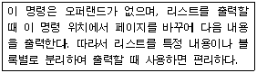
- EJECT
- ASSUME
- EXTERN
- PUBLIC
(정답률: 69%)
10. 어셈블리어에서 어떤 기호적 이름에 상수 값을 할당하는 명령은?
- EQU
- INCLUDE
- ASSUME
- ORG
(정답률: 85%)
11. 어셈블리어의 특징으로 옳지 않은 것은?
- 어셈블리어는 모든 컴퓨터 기종에 공통으로 적용할 수 있다.
- 어셈블리어는 기계어에 가까운 언어이다.
- 어셈블리어는 기계어와 1 대 1로 대응시켜서 표현한 기호식 표기법이다.
- 어셈블리어에서는 데이터가 기억된 번지를 기호(symbol)로 지정한다.
(정답률: 76%)
12. 프로그램 수행 순서로 옳은 것은?
- 원시 프로그램→목적 프로그램→컴파일러→링커→로더
- 목적 프로그램→링커→원시 프로그램→컴파일러→로더
- 원시 프로그램→컴파일러→목적 프로그램→링커→로더
- 목적 프로그램→컴파일러→원시 프로그램→링커→로더
(정답률: 77%)
13. C 언어에서 문자열 출력 함수는?
- gets()
- puts()
- getchar()
- putchar()
(정답률: 70%)
14. 매크로 관련 용어 중 매크로 호출 부분에 정의된 매크로 코드를 삽입하는 것을 의미하는 것은?
- 매크로 확장
- 매크로 호출
- 매크로 정의
- 매크로 라이브러리
(정답률: 73%)
15. C언어에서 프로그램의 변수 선언을 "int c; "로 했을 경우 "&c" 는 어떤 의미인가?
- c의 절대값
- c에 저장된 값
- c의 기억장소 주소
- c의 범위
(정답률: 75%)
16. 단항 연산자 연산에 해당하는 것은?
- MOVE
- AND
- OR
- XOR
(정답률: 88%)
17. 객체 지향 기법에서 하나 이상의 유사한 객체들을 묶어서 하나의 공통된 특성을 표현한 것으로 자료 추상화의 개념으로 볼 수 있는 것은?
- 메소드
- 클래스
- 메시지
- 인스턴스
(정답률: 69%)
18. C 언어의 기억클래스 종류가 아닌 것은?
- External
- Static
- Register
- Point
(정답률: 70%)
19. C 언어에서 부호 없는 10진수 출력 명령에 사용되는 것은?
- %d
- %c
- %u
- %x
(정답률: 69%)
20. 주어진 BNF를 이용하여 그 대상을 근으로 하고 터미널 노드들이 검증하고자 하는 표현식과 같이 되는 트리를 무엇이라고 하는가?
- sweked tree
- binary tree
- parse tree
- circle tree
(정답률: 83%)
2과목: 자료구조 및 데이터통신
21. FDM(Frequency-Division Multiplexing)방식의 설명으로 틀린 것은?
- 주파수 분할 다중화는 전화의 장거리 전송망에 도입되어 사용되어 왔다.
- 가변 파장 송신장치, 가변 파장 수신 장치를 사용하여 특정채널을 선택한다.
- 여러 신호를 전송 매체의 서로 다른 주파수 대역을 이용하여 동시에 전송하는 기술이다.
- 인접한 채널 간의 간섭을 막기 위해 일반적으로 보호대역(Guard Band)을 사용한다.
(정답률: 59%)
22. HDLC에서 피기백킹(piggybacking) 기법을 통해 데이터에 대한 확인응답을 보낼 때 사용되는 프레임은?
- I-프레임
- S-프레임
- U-프레임
- A-프레임
(정답률: 53%)
23. 데이터 전송 방식 중 비동기 전송 방식에 대한 설명으로 틀린 것은?
- 시작(start)비트는 이진수의 "0" 의 값을 가지며, 한 비트의 길이를 갖는다.
- 정지(stop)비트는 이진수의 "1" 의 값을 가지며, 최소 길이는 보통 정상비트의 1~2배로 규정한다.
- 수신기는 자신의 클록신호를 사용하여 회선을 샘플링하여 각 비트의 값을 읽어내는 방식이다.
- 전송할 데이터를 블록으로 구성하며, 송신기와 수신기가 동일한 클록을 사용하여 데이터를 송·수신한다.
(정답률: 60%)
24. 데이터 전송 중 발생한 에러를 검출하는 기법이 아닌 것은?
- Parity Check
- Block Sum Check
- Slide Window Check
- Cyclic Redundancy Check
(정답률: 68%)
25. TCP/IP 프로토콜의 구조에 해당하지 않는 계층은?
- Physical 계층
- Application 계층
- Session 계층
- Transport 계층
(정답률: 55%)
26. HDLC(High-level Data Link Control)에서 링크 구성 방식에 따른 세 가지 모드에 해당되지 않는 것은?
- NRM
- ABM
- SBM
- ARM
(정답률: 78%)
27. 아날로그 데이터를 아날로그 신호로 전송할 때 사용되는 변조방식으로 옳지 않은 것은?
- DM
- AM
- PM
- FM
(정답률: 72%)
28. 현재 많이 사용되고 있는 LAN 방식인 "10BASE-T"에서 "10"이 가리키는 의미는?
- 데이터 전송 속도가 10Mbps
- 케이블의 굵기가 10 밀리미터
- 접속할 수 있는 단말의 수가 10대
- 배선할 수 있는 케이블의 길이가 10미터
(정답률: 78%)
29. 인터넷 상의 서버와 클라이언트 사이의 멀티미디어를 송·수신하기 위한 프로토콜과 웹 문서를 작성하기 위해 사용하는 언어를 순서대로 바르게 나열한 것은?
- URI, URL
- HTTP, MHS
- HTTP, HTML
- WWW, HTTP
(정답률: 68%)
30. 회선교환 방식에 대한 설명으로 틀린 것은?
- 송신스테이션과 수신스테이션 사이에 데이터를 전송하기 전에 먼저 교환기를 통해 물리적으로 연결이 이루어져야 한다.
- 현재 널리 사용되고 있는 전화시스템이 이에 해당된다.
- 가변길이의 메시지 단위로 저장-전달(store and forward) 방식에 의해 데이터를 교환한다.
- 정보 전송이 완료되면, 호 해제를 통하여 점유되었던 회선을 내어 놓음으로써 다른 통신을 위해 사용될 수 있도록 한다.
(정답률: 55%)
31. 다음 산술식을 포스트 오더(Post Order) 운행법으로 옳게 표기한 것은?
- X A B C D / + E * + F - =
- C / D * E - F + A + B X =
- A + B - F + C / D * E X =
- = A - F + B + C / D * E X
(정답률: 75%)
32. 스택에 대한 설명으로 옳지 않은 것은?
- 리스트의 한쪽 끝으로만 자료의 삽입, 삭제 작업이 이루어지는 자료 구조이다.
- 스택으로 할당된 기억공간에 가장 마지막으로 삽입된 자료가 기억된 공간을 가리키는 요소를 TOP이라고 한다.
- 가장 먼저 삽입된 자료가 가장 먼저 삭제되는 FIFO방식이다.
- 부프로그램 호출시 복귀주소를 저장할 때 스택을 이용한다.
(정답률: 74%)
33. 분산 데이터베이스에 대한 설명으로 옳지 않은 것은?
- 소프트웨어 개발 비용이 감소한다.
- 지역 자치성이 높다.
- 자료의 공유성이 향상된다.
- 신뢰성 및 가용성이 높다.
(정답률: 70%)
34. 해시 함수와 밀접한 관계가 있는 파일은?
- DAM 파일
- VSAM 파일
- ISAM 파일
- Multi Ring 파일
(정답률: 71%)
35. 다음 자료에 대하여 버블 정렬을 이용하여 오름차순으로 정렬할 경우 1회전 후의 결과는?
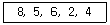
- 5, 2, 4, 6, 8
- 2, 4, 5, 6, 8
- 5, 6, 2, 4, 8
- 2, 8, 5, 6, 4
(정답률: 74%)
36. 색인 순차 파일의 색인 구역에 해당하지 않는 것은?
- Track Index Area
- Cylinder Index Area
- Master Index Area
- Overflow Index Area
(정답률: 80%)
37. 선형 구조에 해당하는 자료 구조 모두를 옳게 나열한 것은?
- ①, ②, ③, ④
- ①, ②, ③
- ①, ②, ④
- ②, ③, ④
(정답률: 67%)
38. 데이터베이스의 3계층 스키마 중 다음은 무엇에 대한 설명인가?
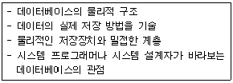
- 기술 스키마
- 외부 스키마
- 개념 스키마
- 내부 스키마
(정답률: 64%)
39. 트랜잭션의 특성에 해당하지 않는 것은?
- Integrity
- Atomicity
- Consistency
- Durability
(정답률: 75%)
40. 데이터베이스 관리 시스템의 필수 기능에 해당하지 않는 것은?
- 정의 기능(definition facility)
- 조작 기능(manipulation facility)
- 예비 기능(backup facility)
- 제어 기능(control facility)
(정답률: 78%)
3과목: 전자계산기구조
41. 논리식
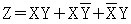
를 간소화한 결과로 옳은 것은?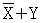
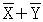
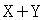
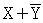
(정답률: 50%)
42. Direct Memory Access(DMA)에서 가져야 할 정보가 아닌 것은?
- 전송해야 할 자료의 주소
- CPU의 상태
- DMA의 상태
- 전송될 데이터 단어들의 수
(정답률: 47%)
43. 프로그램 제어와 가장 밀접한 관계가 있는 레지스터는?
- memory address register
- index register
- accumulator
- status register
(정답률: 54%)
44. k개의 단계들로 구성된 일반적인 파이프라인 프로세서에서 N개의 명령어들을 실행하는 걸리는 시간을 구하는 식은?
- T(1, 1) = k + N
- T(1, 1) = k * N -1
- T(1, 1) = kN - 1
- T(1, 1) = k + N - 1
(정답률: 39%)
45. 컴퓨터의 메모리 용량이 4096워드이고, 워드당 16bit의 데이터를 갖는다면 MAR은 몇 비트인가?
- 12
- 16
- 18
- 20
(정답률: 33%)
46. 매크로(MACRO) 명령어는 프로그램의 어느 것과 유사한가?
- NAME
- END문
- CALL문
- 파라미터(parameter)
(정답률: 63%)
47. 명령어의 명령 코드 부분은 어느 레지스터로 이동하는가?
- instruction register
- index register
- address register
- flag register
(정답률: 64%)
48. RS 플립플롭 회로에 그림과 같은 셋 신호(set signal), 리셋 신호(reset signal)를 줄 때 그 출력 파형은?
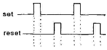
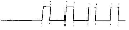
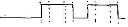
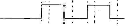
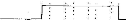
(정답률: 48%)
49. 한 워드의 입출력을 위해 CPU가 계속 flag를 검사하지 않고 데이터가 준비되면 CPU가 인터페이스에서 입출력을 요구하고 입출력 전송이 완료되면 CPU는 수행 중이던 프로그램으로 되돌아가서 수행을 재개하는 입출력방식은?
- 프로그램된 I/O에 의한 방식
- DMA(Direct Memory Access) 방식
- interrupt 에 의한 방식
- register를 이용한 방식
(정답률: 57%)
50. 소프트웨어에 의하여 우선순위를 판별하는 방법은?
- 인터럽트 벡터
- 데이지 체인
- 폴링
- 핸드세이킹
(정답률: 65%)
51. 채널 명령어의 구성 요소가 아닌 것은?
- data address
- flag
- operation code
- I/O device 처리 속도
(정답률: 71%)
52. I/O operation과 관계가 없는 것은?
- channel
- handshaking
- interrupt
- emulation
(정답률: 68%)
53. 불 대수식 중 틀린 것은?
- A + A = A
- A + (BC) = (A + B)(A + C)
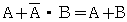
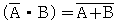
(정답률: 65%)
54. 마이크로프로그램된 제어 구조에 있어서 주소의 결정은 제어 메모리에서 행해지는데 다음 중에서 주소 결정방법과 거리가 먼 것은?
- 무조건 분기와 상태 비트 조건에 따른 조건부 분기
- PC를 하나 증가시킴
- 명령어의 비트들로부터 제어 메모리의 주소로 매핑하는 처리
- 서브루틴 call 및 return 기능
(정답률: 49%)
55. 4비트의 데이터 비트와 1비트의 패리티 비트가 사용되는 경우 몇 개 비트까지 에러를 검출할 수 있는가?
- 1
- 2
- 3
- 4
(정답률: 52%)
56. 램(RAM) 칩(chip) 내에 들어있는 회로가 아닌 것은?
- 기억소자 행렬
- 주소 해독회로
- 칩 선택회로
- 읽기/쓰기 선택
(정답률: 39%)
57. 인터럽트와 비교하여 DMA 방식에 의한 사이클 스틸의 가장 특징적인 차이점은?
- 프로그램을 영원히 정지
- 실행 중인 프로그램 정지
- 프로그램 실행의 다시 시작
- 주기억 장치 사이클의 한 주기만 정지
(정답률: 53%)
58. 그림과 같은 회로의 게이트(gate)는? (단, 정논리에 의함)
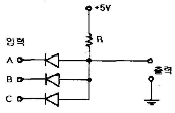
- AND gate
- OR gate
- NAND gate
- NOR gate
(정답률: 43%)
59. 다음 설명 중 틀린 것은?
- 멀티플렉서 채널과 블록 멀티플렉서 채널은 저속 입출력 장치용이다.
- CPU는 지정된 제어 라인이나 메모리내의 일정한 장소를 통하여 통신한다.
- 입출력 프로세서는 고유의 명령어를 fetch하고 실행시킬 수 있다.
- CPU와 입출력 프로세서의 동시 메모리 접근으로 CPU의 성능이 감소될 수 있다.
(정답률: 41%)
60. 인터럽트에 대한 설명으로 옳지 않은 것은?
- 인터럽트란 컴퓨터가 정상적인 작업을 수행하는 도중에 발생하는 예기치 않은 일들에 대한 서비스를 수행하는 기능이다.
- 온라인 실시간 처리를 위해 인터럽트 기능은 필수적이다.
- 입출력 인터럽트를 이용하면 중앙처리장치와 주변장치간의 극심한 속도 차이 문제를 해결하여 컴퓨터의 효율을 증대시킬 수 있다.
- 인터럽트는 모두 에러(error)에 대한 복구 기능만을 가지고 있다.
(정답률: 68%)
4과목: 운영체제
61. 구역성(locality)에 대한 설명으로 옳지 않은 것은?
- 실행 중인 프로세서가 일정 시간 동안에 참조하는 페이지의 집합을 의미한다.
- 시간 구역성과 공간 구역성이 있다.
- 캐시 메모리 시스템의 이론적 근거이다.
- Denning 교수에 의해 구역성의 개념이 증명되었다.
(정답률: 50%)
62. UNIX의 가장 핵심적인 부분으로 프로세스 관리, 기억장치 관리, 파일 관리, 입출력 관리, 프로세스간 통신, 데이터 전송 및 변환 등의 기능을 수행하는 것은?
- IPC
- Utility Program
- 쉘
- 커널
(정답률: 53%)
63. 시스템 전체의 생산성을 향상 시킬 목적으로 사용되는 시스템 성능 평가 요소에 해당하지 않는 것은?
- 처리 능력
- 신뢰도
- 사용가능도
- 입력시간
(정답률: 54%)
64. 분산 시스템의 구축 목적에 해당하지 않는 것은?
- 보안성 향상
- 자원 공유의 용이성
- 연산 속도 향상
- 신뢰성 향상
(정답률: 61%)
65. 라운드 로빈 알고리즘을 사용하여 A, B, C, D, E의 작업을 실행시킬 때, 대기시간은 다음과 같다. 평균 대기시간은?
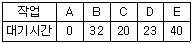
- 25
- 23
- 18
- 12
(정답률: 49%)
66. 교착상태와 은행원 알고리즘의 불안전상태(Unsafe State)에 대한 설명 중 옳은 것은?
- 교착상태는 불안전상태에 속한다.
- 불안전상태의 모든 시스템은 궁극적으로 교착상태에 빠지게 된다.
- 불안전상태는 교착상태에 속한다.
- 교착상태와 불안전상태는 서로 무관하다.
(정답률: 41%)
67. UNIX의 특징이 아닌 것은?
- 트리 구조의 파일 시스템을 가진다.
- 대화식 운영체제이다.
- Multi-User는 지원하지만 Multi-Tasking은 지원하지 않는다.
- 이식성이 높으며, 장치, 프로세스 간의 호환성이 높다.
(정답률: 56%)
68. 페이지 부재가 너무 자주 일어나 프로세스가 실행에 보내는 시간보다 페이지 교체에 보내는 시간이 더 많은 상황은?
- 스풀링
- 스래싱
- 페이징
- 교착상태
(정답률: 55%)
69. 빈 기억공간의 크기가 20K, 16K, 8K, 40K 일 때 기억장치 배치 전략으로 "Best Fit"을 사용하여 17K의 프로그램을 적재할 경우 내부단편화의 크기는 얼마인가?
- 3K
- 23K
- 64K
- 67K
(정답률: 62%)
70. 운영체제의 발달과정 순서를 옳게 나열한 것은?
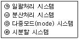
- ㉮→㉱→㉰→㉯
- ㉰→㉯→㉱→㉮
- ㉮→㉰→㉱→㉯
- ㉰→㉱→㉯→㉮
(정답률: 52%)
71. 어셈블러를 두 개의 Pass로 구성하는 이유로서 가장 적절한 것은?
- pass 1, 2의 어셈블러 프로그램이 작아서 경제적이기 때문에
- 한 개의 pass만을 사용하면 프로그램의 크기가 증가하여 유지보수가 어렵기 때문에
- 한 개의 pass만을 사용하면 메모리가 많이 소요되기 때문에
- 기호를 정의하기 전에 사용할 수 있어 프로그램 작성이 용이하기 때문에
(정답률: 66%)
72. 분산 처리 시스템의 네트워크 위상 중 무엇에 대한 설명인가?
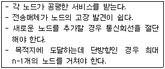
- 완전 연결 구조
- 계층 연결 구조
- 성형 구조
- 링형 구조
(정답률: 50%)
73. 디스크 스케줄링에서 SSTF(Shortest Seek Time First) 에 대한 설명으로 옳지 않은 것은?
- 탐색 거리가 가장 짧은 요청이 먼저 서비스를 받는다.
- 일괄처리 시스템 보다는 대화형 시스템에 적합하다.
- 가운데 트랙이 안쪽이나 바깥쪽 트랙보다 서비스 받을 확률이 높다.
- 헤드에서 멀리 떨어진 요청은 기아상태(starvation)가 발생할 수 있다.
(정답률: 49%)
74. 보안 유지 기법 중 하드웨어나 운영체제에 내장된 보안기능을 이용하여 프로그램의 신뢰성 있는 운영과 데이터의 무결성 보장을 기하는 기법은?
- 외부 보안
- 운용 보안
- 사용자 인터페이스 보안
- 내부 보안
(정답률: 58%)
75. UNIX에서 쉘(Shell)에 대한 설명으로 옳지 않은 것은?
- 사용자 명령을 받아 해석하고 수행시키는 명령어해석기이다.
- 프로세스 관리, 기억장치 관리, 파일 관리 등의 기능을 수행한다.
- 시스템과 사용자 간의 인터페이스를 담당한다.
- 커널처럼 메모리에 상주하지 않기 때문에 필요할 경우 교체될 수 있다.
(정답률: 50%)
76. 분산 운영체제에서 사용자가 원하는 파일이나 데이터베이스, 프린터 등의 자원들이 지역 컴퓨터 또는 네트워크 내의 다른 원격지 컴퓨터에 존재하더라도 위치에 관계없이 그의 사용을 보장하는 개념은?
- 위치 투명성
- 접근 투명성
- 복사 투명성
- 접근 독립성
(정답률: 58%)
77. 4개의 페이지를 수용할 수 있는 주기억장치가 있으며, 초기에는 모두 비어 있다고 가정한다. 다음의 순서로 페이지 참조가 발생할 때, FIFO 페이지 교체 알고리즘을 사용할 경우 페이지 결함의 발생 횟수는?
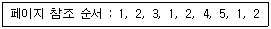
- 6회
- 7회
- 8회
- 9회
(정답률: 40%)
78. 가상 주소(virtual address)의 구성요소가 아닌 것은?
- 세그먼트 번호
- 보호비트
- 페이지 번호
- 변위
(정답률: 30%)
79. 시스템 소프트웨어의 하나인 로더(Loader)의 기능에 해당 하지 않는 것은?
- Allocation
- Linking
- Translation
- Relocation
(정답률: 49%)
80. 해싱 등의 사상 함수를 사용하여 레코드 키에 의한 주소 계산을 통해 레코드를 접근할 수 있도록 구성한 파일은?
- 순차 파일
- 인덱스 파일
- 직접 파일
- 다중 링 파일
(정답률: 46%)
5과목: 마이크로 전자계산기
81. 하드와이어적인 제어 장치와 비교하여 마이크로프로그램된 제어 장치의 특징이 아닌 것은?
- 마이크로프로그램은 제어 메모리에 저장한다.
- 제어 메모리는 ROM으로 구현한다.
- 제어신호를 제어 신호 생성기에서 생성한다.
- 마이크로 명령어로 구성되는 마이크로프로그램은 읽기만 수행한다.
(정답률: 32%)
82. 8192word의 용량을 갖고, 한 word가 8bit인 Dynamic RAM이 있다. 이 RAM chip을 이용하여 64K 용량을 가진 16bit의 주기억장치를 설계하고자 할 때 필요한 chip의 수는?
- 8
- 12
- 16
- 32
(정답률: 49%)
83. 다음 명령어 중 시프트(shift) 명령어에 속하지 않는 것은?
- ROR(Rotate Right)
- COMC(Complement Carry)
- SHR(Shift Right)
- SHRA(Arithmetic Shift Right)
(정답률: 68%)
84. 마이크로프로그램제어명령어(Micro-program Control Instruction)중에서 번지가 필요 없는 무번지 명령은?
- SKP(skip)
- BR(branch)
- AND(and)
- CALL(call)
(정답률: 58%)
85. 언어 처리(번역)용 소프트웨어가 아닌 것은?
- compiler
- assembler
- interpreter
- device driver
(정답률: 72%)
86. 마이크로프로세서의 주요 구성블록으로 볼 수 없는 것은?
- ALU
- 제어부
- 레지스터부
- 주기억장치
(정답률: 73%)
87. 한 번에 하나의 워드만을 전송하는 DMA 방식은?
- Burst 방식
- Cycle Stealing 방식
- Daisy Chain 방식
- Strobe Control 방식
(정답률: 43%)
88. 기억장치로부터 입출력장치로 자료 전송시 가장 고속인 방식은?
- 프로그램 입출력 방식
- 인터럽트 입출력 방식
- 직접 메모리 전송 방식
- 스택 이용 방식
(정답률: 61%)
89. 프로그램 크기가 가장 작은 주소 형식은?
- 0-주소형식
- 1-주소형식
- 2-주소형식
- 3-주소형식
(정답률: 36%)
90. 커널(Kernel)의 태스크(Task) 관리와 관계가 없는 것은?
- 생성 및 소멸(Fork & Exit)
- 수정 및 연결(Modify & Link)
- 문맥교환(context Switch)
- 상태전이(State Transition)
(정답률: 29%)
91. RISC(Reduced Instruction Set Computer)에 대한 설명으로 틀린 것은?
- 하드웨어에서 스택을 지원한다.
- 메모리 접근 횟수를 줄이기 위해 많은 수의 레지스터를 사용한다.
- 빠른 명령어 해석을 위해 고정 명령어 길이를 사용한다.
- 비교적 전력 소모가 작기 때문에 임베디드 프로세서에도 채택되고 있다.
(정답률: 26%)
92. 마이크로프로그램과 거리가 가장 먼 것은?
- 마이크로 인스트럭션으로 구성되어 있다.
- 제어장치에 이용하는 경향이 있다.
- 마이크로프로그램은 중앙처리장치에 기억된다.
- 대규모 집적회로의 이용이 가능해서 제어기의 비용이 절감된다.
(정답률: 37%)
93. 주변장치에 대하여 isolated I/O 방식을 사용하는 시스템의 동작 설명 중 틀린 것은?
- IN, OUT 등의 특정한 I/O 명령어를 가진다.
- 메모리 전송인지 입출력 전송인지를 구별하기 위한 별도의 분리된 제어선이 필요하다.
- 동일 어드레스가 메모리와 I/O 장치에 중복 사용될 수 있다.
- 메모리 용구 명령어로 I/O 장치요구 명령을 할 수 있다.
(정답률: 18%)
94. micro-cycle의 동기 가변식(synchronous variable)에 대한 설명으로 옳은 것은?
- 모든 마이크로 오퍼레이션 중 가장 짧은 것을 마이크로 cycle time으로 한다.
- 모든 마이크로 오퍼레이션 중 가장 긴 것을 마이크로 cycle time으로 한다.
- 마이크로 오퍼레이션의 수행시간 차이가 클 때 사용되는 방식이다.
- 제어가 간단하다.
(정답률: 45%)
95. 다음 설명 중 옳지 않은 것은?
- 개방형 서브루틴과 폐쇄형 서브루틴의 차이는 부프로그램 실행을 위한 제어 관계에 있다.
- 인터프리터는 목적프로그램을 형성한 다음 목적프로그램을 실행하는 언어 번역 프로그램이다.
- 로더의 기능은 기억장소 할당과 부프로그램의 연결, 적재 및 리로케이션이다.
- 매크로는 개방형 서브루틴이다.
(정답률: 45%)
96. 100핀의 접속점을 갖는 컴퓨터용 백플레인 접속규격으로 마이크로컴퓨터용 최초의 산업 표준 버스(bus)는?
- S-100
- RS-232C
- IEEE-488
- CAMAC
(정답률: 58%)
97. 입출력 프로세서와 CPU의 관계에 대한 설명으로 가장 옳은 것은?
- CPU와 입출력 프로세서는 무관하다.
- CPU는 입출력 프로세서에게 입출력 동작을 수행하도록 명령한 후 계속 관여한다.
- CPU는 입출력 프로세서에게 입출력 동작을 수행하도록 명령한 후 CPU는 다른 일을 수행한다.
- 입출력 프로세서는 CPU에게 입출력 동작을 수행하도록 명령한다.
(정답률: 60%)
98. 신호(signal)가 Low라면 모뎀 또는 데이터 셋이 UART와 통신을 성립할 준비가 되어 있음을 의미하는 것은?
- TXD
- nDSR
- nRI
- nDCD
(정답률: 38%)
99. 파이프라인 프로세서의 설명 중 가장 적합한 것은?
- 다중 프로그래밍 시스템의 프로세서
- 제어 메모리가 분리된 프로세서
- 2개 이상의 명령어를 동시에 수행할 수 있는 프로세서
- 분산 기억장치 시스템의 프로세서
(정답률: 45%)
100. 48kbyte의 기억용량을 가진 8bit 마이크로컴퓨터의 address line의 수는?
- 8개
- 12개
- 16개
- 32개
(정답률: 42%)